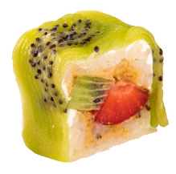
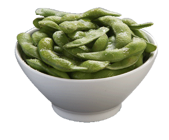
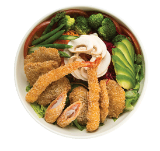
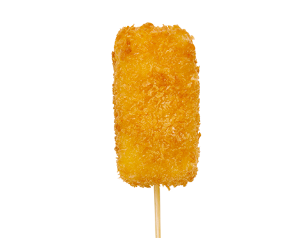
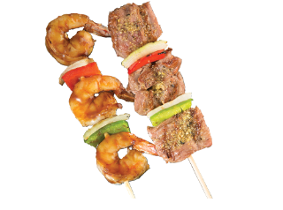
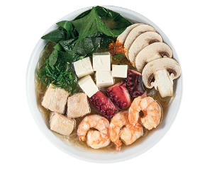
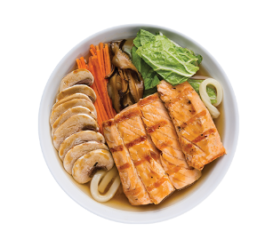

Temporada

Entradas

Ensaladas

Kushiage

Yakitori

Sopas

Noodles

Poke bowls
Misión
Comprometidos con la innovación y la calidad ofrecemos a nuestros clientes un espacio diferente donde el sabor y el servicio generan una experiencia de emociones y sensaciones únicas.
Visión
Ser reconocidos como la marca líder en comida japonesa por su excelencia en servicio, innovación y calidad, gracias a nuestros colaboradores y valores institucionales lo que nos perfila a mercados internacionales.
Valores
En Sushi Roll sabemos lo importante que es tener un estilo definido de vida y de actuar, nos apegamos a códigos, reglamentos y principios que rigen nuestro día a día generando así desde nuestro origen una cultura empresarial, la cual es el sello distintivo de la marca identificándonos con los valores de:
Calidad: Cuidando nuestros procesos, revisándolos y esmerándonos en innovarlos constantemente.Compromiso: Con nuestros principios éticos, con la sociedad, con la mejora continua y con el medio ambiente.